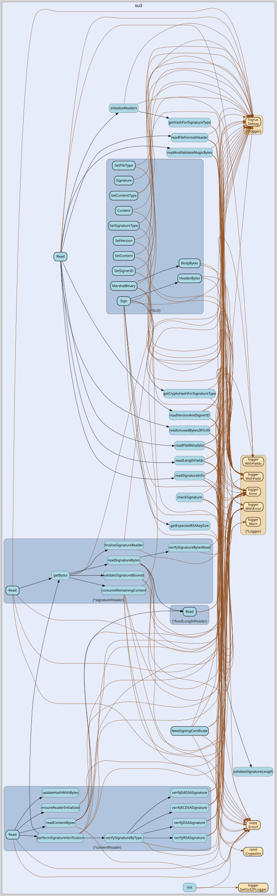

go-i2p/su3
README
su3
–
import "github.com/go-i2p/su3"

Package su3 implements reading the SU3 file format.
SU3 files provide content that is signed by a known identity. They are used to distribute many types of data, including reseed files, plugins, blocklists, and more.
See: https://geti2p.net/spec/updates#su3-file-specification
The Read() function takes an io.Reader, and it returns a *SU3. The *SU3 contains the SU3 file metadata, such as the type of the content and the signer ID. In order to get the file contents, one must pass in the public key associated with the file’s signer, so that the signature can be validated. The content can still be read without passing in the key, but after returning the full content the error ErrInvalidSignature will be returned.
Example usage:
// Let's say we are reading an SU3 file from an HTTP body, which is an io.Reader.
su3File, err := su3.Read(body)
if err != nil {
// Handle error.
}
// Look up this signer's key.
key := somehow_lookup_the_key(su3File.SignerID)
// Read the content.
contentReader := su3File.Content(key)
bytes, err := ioutil.ReadAll(contentReader)
if errors.Is(err, su3.ErrInvalidSignature) {
// The signature is invalid, OR a nil key was provided.
} else if err != nil {
// Handle error.
}
If you want to parse from a []byte, you can wrap it like this:
mySU3FileBytes := []byte{0x00, 0x01, 0x02, 0x03}
su3File, err := su3.Read(bytes.NewReader(mySU3FileBytes))
One of the advantages of this library’s design is that you can avoid buffering the file contents in memory. Here’s how you would stream from an HTTP body directly to disk:
su3File, err := su3.Read(body)
if err != nil {
// Handle error.
}
// Look up this signer's key.
key := somehow_lookup_the_key(su3File.SignerID)
// Stream directly to disk.
f, err := os.Create("my_file.txt")
if err != nil {
// Handle error.
}
_, err := io.Copy(f, su3File.Content(key))
if errors.Is(err, su3.ErrInvalidSignature) {
// The signature is invalid, OR a nil key was provided.
// Don't trust the file, delete it!
} else if err != nil {
// Handle error.
}
Note: if you want to read the content, the Content() io.Reader must be read before the Signature() io.Reader. If you read the signature first, the content bytes will be thrown away. If you then attempt to read the content, you will get an error. For clarification, see TestReadSignatureFirst.
Usage
var (
ErrMissingMagicBytes = oops.Errorf("missing magic bytes")
ErrMissingUnusedByte6 = oops.Errorf("missing unused byte 6")
ErrMissingFileFormatVersion = oops.Errorf("missing or incorrect file format version")
ErrMissingSignatureType = oops.Errorf("missing or invalid signature type")
ErrUnsupportedSignatureType = oops.Errorf("unsupported signature type")
ErrMissingSignatureLength = oops.Errorf("missing signature length")
ErrMissingUnusedByte12 = oops.Errorf("missing unused byte 12")
ErrMissingVersionLength = oops.Errorf("missing version length")
ErrVersionTooShort = oops.Errorf("version length too short")
ErrMissingUnusedByte14 = oops.Errorf("missing unused byte 14")
ErrMissingSignerIDLength = oops.Errorf("missing signer ID length")
ErrMissingContentLength = oops.Errorf("missing content length")
ErrContentLengthTooLarge = oops.Errorf("content length exceeds maximum allowed size")
ErrSignatureLengthTooLarge = oops.Errorf("signature length exceeds maximum allowed size")
ErrMissingUnusedByte24 = oops.Errorf("missing unused byte 24")
ErrMissingFileType = oops.Errorf("missing or invalid file type")
ErrMissingUnusedByte26 = oops.Errorf("missing unused byte 26")
ErrMissingContentType = oops.Errorf("missing or invalid content type")
ErrMissingUnusedBytes28To39 = oops.Errorf("missing unused bytes 28-39")
ErrMissingVersion = oops.Errorf("missing version")
ErrMissingSignerID = oops.Errorf("missing signer ID")
ErrMissingContent = oops.Errorf("missing content")
ErrMissingSignature = oops.Errorf("missing signature")
ErrInvalidPublicKey = oops.Errorf("invalid public key")
ErrInvalidSignature = oops.Errorf("invalid signature")
ErrInvalidSignatureLength = oops.Errorf("signature length invalid for signature type")
)
Error variables define all possible errors that can occur during SU3 processing. Moved from: su3.go
func NewSigningCertificate
func NewSigningCertificate(signerID string, privateKey *rsa.PrivateKey) ([]byte, error)
NewSigningCertificate creates a self-signed X.509 certificate for SU3 file signing. It generates a certificate with the specified signer ID and RSA private key for use in I2P reseed operations. The certificate is valid for 10 years and includes proper key usage extensions for digital signatures.
Parameters:
- signerID: The common name and subject key ID for the certificate
- privateKey: The RSA private key used to sign the certificate
Returns the DER-encoded certificate bytes or an error if generation fails.
type ContentType
type ContentType string
ContentType represents the type of content contained within the SU3 file. Moved from: su3.go
const (
UNKNOWN ContentType = "unknown"
ROUTER_UPDATE ContentType = "router_update"
PLUGIN ContentType = "plugin"
RESEED ContentType = "reseed"
NEWS ContentType = "news"
BLOCKLIST ContentType = "blocklist"
)
ContentType constants define supported content types. Moved from: su3.go
type FileType
type FileType string
FileType represents the type of file contained within the SU3 archive. Moved from: su3.go
const (
ZIP FileType = "zip"
XML FileType = "xml"
HTML FileType = "html"
XML_GZIP FileType = "xml.gz"
TXT_GZIP FileType = "txt.gz"
DMG FileType = "dmg"
EXE FileType = "exe"
)
FileType constants define supported file types. Moved from: su3.go
type SU3
type SU3 struct {
SignatureType SignatureType
SignatureLength uint16
ContentLength uint64
FileType FileType
ContentType ContentType
Version string
SignerID string
}
SU3 represents a parsed SU3 file with its metadata and content readers. Extended to support both reading existing SU3 files and creating new ones. Moved from: su3.go
func New
func New() *SU3
New creates a new SU3 file with default settings and current timestamp. The file is initialized with RSA-SHA512 signature type and a Unix timestamp version. Additional fields must be set before signing and distribution.
func Read
func Read(reader io.Reader) (su3 *SU3, err error)
Read parses an SU3 file from the provided io.Reader and returns a *SU3 instance. The returned SU3 contains metadata about the file and provides access to content and signature. Moved from: su3.go
func (*SU3) BodyBytes
func (su3 *SU3) BodyBytes() []byte
BodyBytes generates the binary representation of the SU3 file without the signature. This includes the magic header, metadata fields, and content data in the proper SU3 format.
func (*SU3) Content
func (su3 *SU3) Content(publicKey interface{}) io.Reader
Content returns an io.Reader for accessing the SU3 file content. The publicKey parameter is used for signature verification during reading. If publicKey is nil, content can be read but ErrInvalidSignature will be returned.
CRITICAL READ ORDER REQUIREMENT: If you want to read both content and signature, the Content() io.Reader MUST be read before the Signature() io.Reader. This limitation exists because SU3 files are a streaming format where content and signature are sequential.
SIDE EFFECTS OF READING SIGNATURE() FIRST: When you read from Signature() before reading Content(), the signature reader will automatically consume and discard ALL remaining content bytes to position the stream correctly for signature reading. This means:
- Any unread content data is permanently lost
- Subsequent calls to Content() will return an empty reader
- No error is generated, but content access is no longer possible
WORKAROUNDS:
1. Always read Content() before Signature() if you need both
2. If you only need signature verification without content access,
you can safely read Signature() directly
3. For scenarios requiring signature-first access, consider using
bytes.Buffer or similar to fully buffer the SU3 data first
EXAMPLE - Correct order for accessing both:
contentReader := su3File.Content(publicKey)
content, err := io.ReadAll(contentReader) // Read content first
if err != nil { /* handle error */ }
signatureReader := su3File.Signature() // Now safe to read signature
signature, err := io.ReadAll(signatureReader)
For test cases demonstrating this behavior, see TestReadSignatureFirst. Moved from: su3.go
func (*SU3) HeaderBytes
func (su3 *SU3) HeaderBytes() []byte
HeaderBytes generates just the SU3 header without content or signature. This is used for signature generation and matches what the parser stores in buff.Bytes().
func (*SU3) MarshalBinary
func (su3 *SU3) MarshalBinary() ([]byte, error)
MarshalBinary serializes the complete SU3 file including signature to binary format. This produces the final SU3 file data that can be written to disk or transmitted. The signature must be set before calling this method for a valid SU3 file.
func (*SU3) SetContent
func (su3 *SU3) SetContent(content []byte)
SetContent sets the content data for the SU3 file.
func (*SU3) SetContentType
func (su3 *SU3) SetContentType(contentType ContentType)
SetContentType sets the content type for the SU3 file.
func (*SU3) SetFileType
func (su3 *SU3) SetFileType(fileType FileType)
SetFileType sets the file type for the SU3 file.
func (*SU3) SetSignatureType
func (su3 *SU3) SetSignatureType(signatureType SignatureType)
SetSignatureType sets the signature type for the SU3 file.
func (*SU3) SetSignerID
func (su3 *SU3) SetSignerID(signerID string)
SetSignerID sets the signer ID for the SU3 file.
func (*SU3) SetVersion
func (su3 *SU3) SetVersion(version string)
SetVersion sets the version string for the SU3 file.
func (*SU3) Sign
func (su3 *SU3) Sign(privateKey *rsa.PrivateKey) error
Sign cryptographically signs the SU3 file using the provided RSA private key. The signature covers the file header and content but not the signature itself. The signature length is automatically determined by the RSA key size. Returns an error if the private key is nil or signature generation fails.
func (*SU3) Signature
func (su3 *SU3) Signature() io.Reader
Signature returns an io.Reader for accessing the SU3 file signature bytes.
IMPORTANT STREAMING BEHAVIOR: Reading from this signature reader will automatically consume any unread content bytes from the underlying stream to correctly position for signature reading. This has the following implications:
- If Content() has not been fully read, all remaining content data
will be discarded when Signature() is first accessed
- This makes subsequent Content() calls return empty readers
- No error occurs, but content access becomes impossible
USAGE PATTERNS: 1. Signature-only access (safe): Call Signature() directly without Content() 2. Both content and signature: Read Content() completely before Signature() 3. Manual verification workflows: Read signature bytes for custom crypto
The signature reader provides the raw signature bytes as stored in the SU3 file. For automatic signature verification, use Content(publicKey) instead.
Moved from: su3.go
type SignatureType
type SignatureType string
SignatureType represents the type of cryptographic signature used in SU3 files. Moved from: su3.go
const (
DSA_SHA1 SignatureType = "DSA-SHA1"
ECDSA_SHA256_P256 SignatureType = "ECDSA-SHA256-P256"
ECDSA_SHA384_P384 SignatureType = "ECDSA-SHA384-P384"
ECDSA_SHA512_P521 SignatureType = "ECDSA-SHA512-P521"
RSA_SHA256_2048 SignatureType = "RSA-SHA256-2048"
RSA_SHA384_3072 SignatureType = "RSA-SHA384-3072"
RSA_SHA512_4096 SignatureType = "RSA-SHA512-4096"
EdDSA_SHA512_Ed25519ph SignatureType = "EdDSA-SHA512-Ed25519ph"
)
SignatureType constants define supported signature algorithms. Moved from: su3.go
su3
github.com/go-i2p/su3